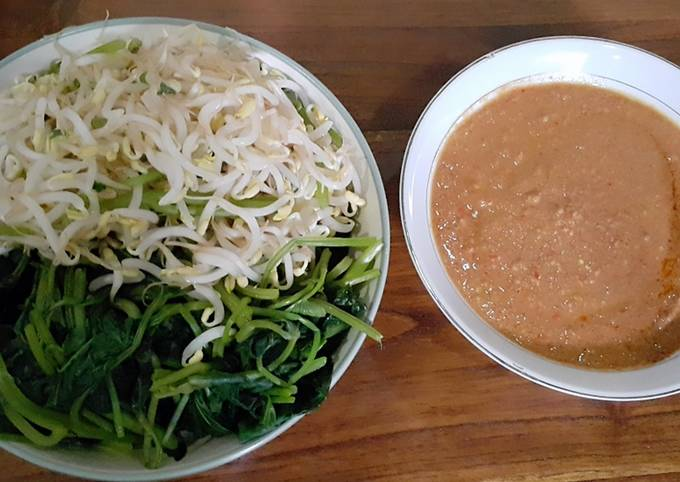

Kota mangga
Indramayu atau biasa orang menyebutnya kota mangga, merupakan sebuah kabupaten yang berada di ujung utara provinsi Jawa Barat. Indramayu bisa disebut kota mangga karena jumlah pohon mangga tak terhitung jumlahnya, selain itu juga memiliki berbagai jenis mangga yang tertanam di dalamnya.
Indramayu juga memiliki banyak makanan khas daerah antara lain:
1. Rumbah
2. Geblog
3. Pedesan Entog
4. Blengep Cotot

Gambar di atas adalah beberapa makanan khas kabupaten Indramayu. Selain memiliki banyak makanan khas indramayu juga memiliki banyak tempat wisata pantai seperti Pantai Karangsong, Pantai Tirtamaya, Pantai Indah Balongan, Pantai Glayem, pantai baro, Pantai Laut Biru, dan masih ada beberapa tempat wisata pantai lainnya. Indramayu juga memilki tempat wisata kuliner yaitu Kulcim (Kuliner Cimanuk(Tjimanoek)).
Budaya yang dimiliki indramayu pun banyak, dimulai dari budaya tei yaitu Tari Topeng, Sintren, tarling, Genjring Akrobat, dan lain sebagainya. Selain tari, Indramayu memiliki bermacam tradisi dimulai dari Mapag Sri, Ngarot, Ngunjung, dan yang pasti karena Indramayu merupakan daerah pesisir maka tradisi Nadran.
What?
Indrramayu adalah nama kabupaten
di mana?
Kabupaten Indramayu terletak di ujung utara provinsi Jawa Barat.